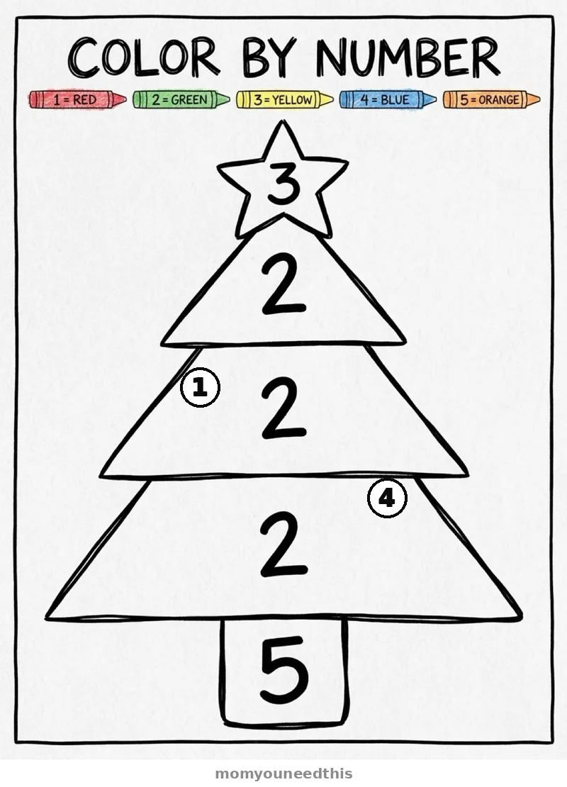

Christmas Tree Paint by Numbers Free Color-by-Number Printable, Ages 3+
Quick Answer
This free christmas tree paint by numbers printable is made for ages 3 and up: big numbered sections, large clear numbers, and just 4 colors on the shared color key. The picture is a three-tier Christmas tree with a yellow star on top and a sturdy orange trunk. One thing to know before you start: this sheet's key skips the number 4 entirely — there are no 4s to find, which saves a lot of frustrated hunting once your child knows it.
At a Glance
- Activity: Christmas Tree Paint by Numbers
- Ages: 3+
- Colors: 4 (1 = Red, 2 = Green, 3 = Yellow, 5 = Orange)
- Sections: Extra-large, numbered
- Supplies: Printed sheet + crayons
- Time: ~15 min

🎨 Color Key for This Sheet
This sheet uses 4 colors from the shared key. The numbers mean the same thing on every sheet — 1 is always red, 2 is always green, and so on.
| Number | Color | What it colors |
|---|---|---|
| 1 | Red | top and bottom sections |
| 2 | Green | the three tree tiers |
| 3 | Yellow | the star |
| 5 | Orange | the trunk |
The three tiers are all green — a great sheet for practicing "find all the 2s."
🖍️ How to Color This Sheet
- Set out the crayons. Only the 4 colors this sheet uses — red, green, yellow and orange. Leave the blue crayon in the box: this key has no 4, and fewer choices means a faster start.
- Point at the key together. “3 is yellow” — find the star at the very top and hold the yellow crayon over it. The star is the sheet's smallest section, and one demo there teaches the whole game.
- Let them work in any order. All the 2s first and grow the tree tier by tier, or save the star for last like the real thing — both are correct. The rule is just: number matches color.
- Say the numbers and colors out loud. “That's a 5 — orange, the trunk!” turns each section into a tiny number-and-color quiz.
🧠 What Kids Learn From This Christmas Tree Sheet
A Christmas tree is a stacking picture, and that shape teaches something the other sheets do not: order inside the picture. The three green tiers get bigger as they go down, the trunk holds them up, and the star finishes the top. Children coloring tier by tier are absorbing how a tree is put together — biggest at the bottom, smallest at the top, star above all.
The sheet also teaches a number lesson hiding in the key: there is no 4. Children who notice the gap — “why does it jump from 3 to 5?” — are doing real number-line thinking, and the honest answer (this picture only needed four colors, so the key only lists four numbers) introduces the idea that a key is a tool made for one picture, not a law.
The find-match-fill loop runs throughout: find the number, match it to the key, fill the section. On this sheet the loop has a rhythm — long green stretches in the tiers, then the small satisfactions of the star and the trunk.
🎨 Make It Your Own
The color key is a starting point, not a rule. Once your child has colored the tree the “right” way, print another copy and let them decorate a wild one: a pink tree, a blue tree, a tree with a rainbow in every tier. Real trees get flocked, lit and themed in every color imaginable, so a wild tree is barely even make-believe.
A fun middle option: keep the tree green and swap only the star and trunk colors, then compare the two finished trees side by side. Which one looks more like Christmas? There is no wrong answer — and the conversation is the point.
🖍️ More Paint by Numbers Sheets
Try another sheet — same color key, new picture.
👨👩👧 A Quiet Activity That Actually Works
December is full of waiting — for parties, for relatives, for the day itself — and this sheet is built for exactly that kind of time. It is a quiet activity that actually works: one page, four crayons, and a picture that assembles itself tier by tier into the most Christmassy object there is. It fits the gap while cookies bake or dinner finishes.
It also makes a genuinely good homemade decoration or grandparent gift once finished — a child's own tree for the fridge or the card envelope. Print a few copies at the start of December: one for practice, one for the fridge, one for the wild version, and the sheet carries the whole month.
❓ Christmas Tree Paint by Numbers FAQs
How does the christmas tree paint by numbers sheet work?
Each section of the tree picture has a number. Match the number to the color key (1 = Red, 2 = Green, 3 = Yellow, 5 = Orange), pick up that crayon, and color the section. The three tiers are green (2), the star is yellow (3), and the trunk is orange (5). Note that this sheet has no number 4 — its key uses only four colors, so no section is marked 4.
What age can kids do this christmas tree paint by numbers sheet?
Ages 3 and up. This sheet uses 4 colors and extra-large numbered sections, so preschoolers can manage it — the tiers are big, forgiving areas, and the only small section is the star on top. Younger toddlers can help fill a whole tier green while a grown-up does the star.
Is this christmas tree paint by numbers printable free?
Yes — completely free, no signup or email required. Download the PDF, print it, and color it as many times as you like. It makes a sweet homemade Christmas decoration once finished.
📚 Keep Exploring
- 🎨 All Paint by Numbers Sheets 8 free color-by-number printables for kids.
- ✏️ Drawing Tutorials 76 free step-by-step drawing tutorials for kids.
- 🎁 Free Resources Free printables and resources for busy moms.